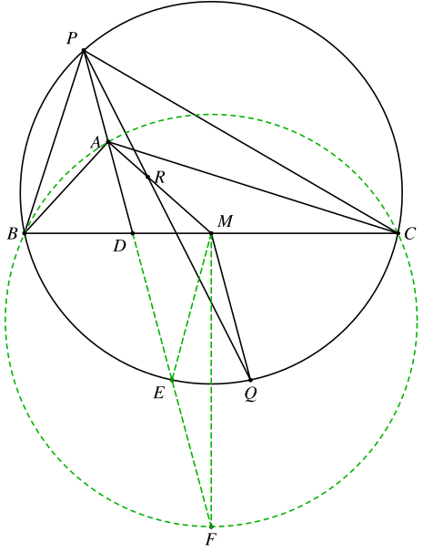
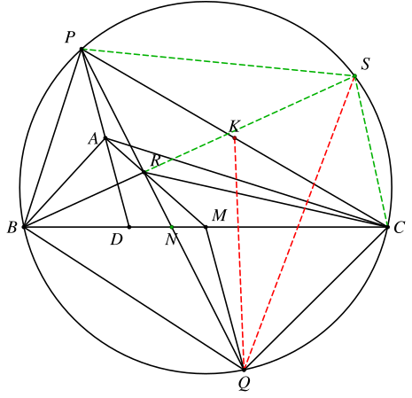
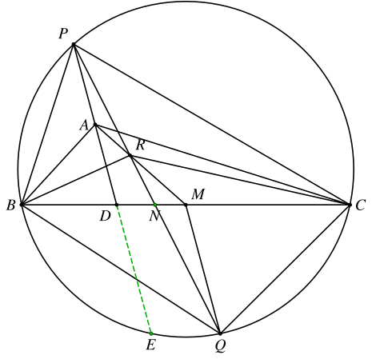

1. 题目
如图，在 △ABC 中，AB<AC，M 为边 BC 的中点，D 为 ∠BAC 的平分线与 BC 的交点，P 为 D 关于 A 的对称点，Q 为 △PBC 的外接圆上一点，满足 MQ∥AD，且 P、Q 位于 BC 的两侧，PQ 与 AM 交于点 R，证明：∠RBQ=∠RCQ。
2. 分析
这个题的关键，是证明点 R 和点 A 关于 △PBC 等角共轭。
点 A 处的等角处理起来比较简单，只需要根据 MQ∥PD 和 M 是中点这两个条件即可证明 ∠BPD=∠QPC。
难点是如何证明第二组等角。
如果熟悉调和点列的话，结合题目中的 MQ∥PD 和 A 是 PD 中点的条件，马上就可以得到一组调和点列，于是
平行+中点 ⟹ 调和点列 ⟹ 调和四边形 ⟹ 类似中线 ⟹ 等角共轭
这是一组很标准的推理路径。结合前一组等角共轭得到的相似 △PBD∼△PQC 即可证明想要的角度相等的结论。
另外，前面已经证明了点 A 的等角共轭点在 PQ 上，接下来实际上我们只需要证明它也在直线 AM 上即可。因此到了这一步，可以直接用重心坐标来计算。
或者，直接硬算
sin∠ABPsin∠ABC=sin∠RBCsin∠RBP
也可以。
3. 解答
3.1. 步骤一：证明∠BPD=∠QPC
延长 AD 交 △PBC 的外接圆于 E，交 △ABC 的外接圆于 F。

由 AD 平分 ∠BAC 可知 F 是优弧 BC 的中点，因此 MF⊥BC。
注意到
PD⋅DE=BD⋅DC=AD⋅DF
可知 DF=2DE，于是有 ME=DE=EF。
又知 MQ∥AD，因此
∠CMQ=∠CDE=∠BME
由对称性可知 MQ=ME，BE=CQ，因此
∠BPE=∠QPC
3.2. 步骤二：证明∠ABP=∠RPC
3.2.1. 方法一：调和四边形
延长 BR 交 △PBC 的外接圆于点 S，设 PC 中点为 K，PQ 与 BC 交于点 N。

由 ∠BPD=∠QPC 可知
△BPD∼△QPC⟹△BAD∼△QKC
由 A 是 PD 中点和 MQ∥AD 可知 PRNQ 为调和点列，因此 PSCQ 为调和四边形，于是 QS 是 △PCQ 的类似中线，可知
∠PBS=∠PQS=∠KQC=∠ABD⟹∠PBA=∠SBD
3.2.2. 方法二：重心坐标
以 △PBC 为参考三角形建立重心坐标系，设 BC=a，PC=b，PB=c，BD=m，DC=n（m+n=a，0<m<n），点 A∗ 是 A 关于 △PBC 的等角共轭点，则
PDAMA∗=(1,0,0)=(0:n:m)=(a:n:m)=(0:1:1)=(a:nb2:mc2)
有步骤一可知 A∗ 在 PQ 上，我们只需要证明它也在 AM 上即可。即证明：
a0an1nb2m1mc2=1
化简可得
mc2−nb2=m−n(I)
我们设 AB=λm，AC=λn，其中 λ>1，则由中线长公式和角平分线长公式可知：
2c2+2m22b2+2n2d2=4λ2m2+4d2=4λ2n2+4d2=λ2mn−mn
整理可得
c2b2=(2λ2−1)m2+2(λ2−1)mn=(2λ2−1)n2+2(λ2−1)mn
代入即可验证上面的等式 (I) 成立。
3.2.3. 方法三：硬算
只需要证明
sin∠ABPsin∠ABC=sin∠RBCsin∠RBP
即可。
设直线 PQ 与 BC 交于点 N。

注意到
sin∠ABPsin∠ABCsin∠RBCsin∠RBP=BDBP=RNPR⋅BPBN
考虑 △PND 和直线 AM，有
RNPR⋅MDNM⋅APDA=1
可知
RNPR=MNDM
因此只需证
BN⋅BDBP2=MNDM(II)
即可。
设 BD=m，DC=n，AB=λm，AC=λn，AD=x，DE=y，其中 0<m<n，λ>1，则有
{mn=2xyx2=(λ2−1)mn⟹yx=2(λ2−1)
于是
MNDNMNDM=y2x=4(λ2−1)=MNDN+1=4λ2−3
因此
DMDNBN=2m+n−m=2n−m=DM⋅4(λ2−1)+14(λ2−1)=4λ2−32(λ2−1)(n−m)=m+DN=4λ2−32λ2−1m+4λ2−32(λ2−1)n
可知
BN⋅BD=4λ2−32λ2−1m2+4λ2−32(λ2−1)mn
而
BP2=2AB2+2AD2−BD2=2λ2m2+2x2−m2=(2λ2−1)m2+2(λ2−1)mn
代入即可验证等式 (II) 成立。
3.3. 步骤三：证明∠RBQ=∠RCQ
由步骤二可知，点 R 和点 A 关于 △PBC 等角共轭，因此 ∠PCA=∠RCB，
∠RBQ=∠RBC+∠CBQ=∠PBA+∠CPR=∠PBA+∠BPA=∠BAD
同理可知 ∠RCQ=∠CAD，因此 ∠RBQ=∠RCQ。